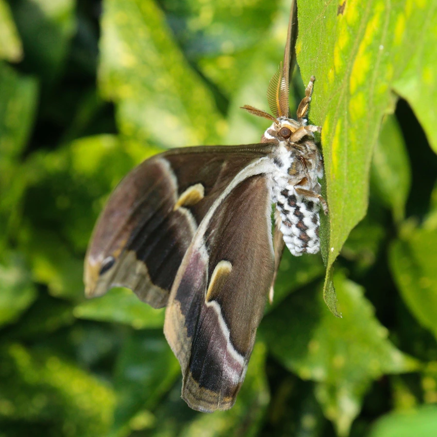

昆虫 · 动物界
蓖麻蚕 Samia ricini

翅面橄榄褐、前后翅各具一枚眼斑的大型蛾类，幼虫取食蓖麻与木薯，人工饲养可产蚕丝，是重要的绢纺原料昆虫。
- 分类
- 门节肢动物门纲昆虫纲目鳞翅目科天蚕蛾科属樗蚕蛾属
- 栖息环境
- 蓖麻、木薯种植区及附近的林缘与村落
- 地理分布
- 起源于印度东北部，中国南方、印度和东南亚有人工饲养种群
- 保护级别
- 无保护问题；为经济昆虫，野外种群依赖人工饲养补充
物种志
蓖麻蚕的翅展约十至十三厘米，翅面橄榄褐色至黄褐色，前翅与后翅各有一枚圆形的眼斑，眼斑中央透明，外圈镶黑与橙黄，翅面还有深浅不一的横纹和白色鳞粉。它的身体粗壮，密被白色绒毛，触角呈羽状，雌蛾腹部肥大，雄蛾触角更宽。成虫口器退化，不取食，只能依靠幼虫期积累的养分完成繁殖。
它起源于印度东北部，长期在人工条件下饲养，中国南方、印度和东南亚都有养殖种群，栖息于蓖麻、木薯种植区及附近的林缘，成虫夜间活动，飞行笨重，常扑向灯光。幼虫以蓖麻、木薯等大戟科植物为食，孵化后大量啃食叶片，结茧于枝叶间，茧为白色或淡黄色，可缫丝，茧丝是重要的绢纺原料。它一年可发生多代，以蛹越冬，在温暖地区可终年繁殖。作为经济昆虫，它尚无保护问题，但野外种群依赖人工饲养补充。
形态与习性
- 翅展约十至十三厘米，翅面橄榄褐色
- 眼斑前后翅各一枚，中央透明，外圈镶黑与橙黄
- 食性幼虫取食蓖麻、木薯等大戟科叶片
- 蚕丝茧白或淡黄，可缫丝作绢纺原料
- 成虫口器退化不取食，夜间活动，扑灯
- 发生世代一年多代，以蛹越冬
趣味知识
- 蓖麻蚕是少数被人类长期饲养的野蛾，茧丝可以像家蚕一样缫成绢线。
- 成虫的口器已经退化，羽化后不吃不喝，只靠幼虫期攒下的养分产卵。
- 它翅上的眼斑中央透明，受惊时会把翅膀抖开，让眼斑突然露出来吓退天敌。